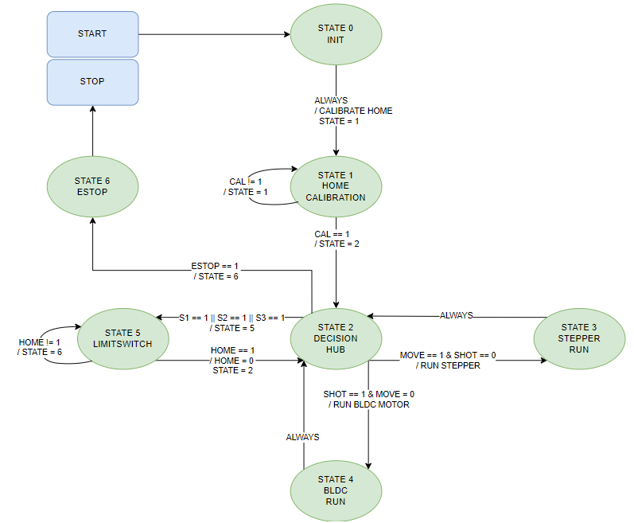

Introduction
The main goal of our code is the process of communication between Bluetooth. More specifically, the communication between our Inertia Measurement Unit (IMU). Therefore, our code reads the values from the IMU and then prints them into a UART through Bluetooth and communicates them to the master. Additionally, our code needed to run in a Finite State Machine (FSM) so it doesn't interrupt our code and gives orders to the other motors and the brushless motors to shoot the ball.

The Hand Controller, It sends IMU information using HC-05 Bluetooth
Finite State Machine

Finite State Machine Diagram, Main System
Finite State Machine Diagram, Hand Controller
Code
- It is provided in this manual.
Common Challenges
This section shows some common challenges we encountered and how to troubleshoot them:
- Problem: How do you set up the wireless Bluetooth for the controller?
- Solution: We use an FTDI connector which opens a port for the HC-05 Bluetooth module. You can follow this link for a tutorial. In case the link is outdated, here are the steps:
- Connect the HC-05 Bluetooth module to the FTDI connector:
- VCC to 5V Bluetooth
- GND to GND
- TX FTDI to RX Bluetooth
- RX FTDI to TX Bluetooth
- Power on the module and check the LED:
- Ensure the LED blinks rapidly (indicating power is on).
- Turn the module off.
- Enter setup mode:
- Hold the HC-05 button while the module is off.
- Turn the module on while holding the button.
- The LED should blink slowly, indicating setup mode.
- Download and open CoolTerm:
- Download the program (verified to be virus-free).
- Open CoolTerm.exe.
- Configure CoolTerm:
- Go to the "Options" menu.
- Select the COM port corresponding to your USB device from the device manager.
- Set the baud rate to 38400 (HC-05 AT command baud rate).
- Enable local echo in CoolTerm:
- Go to the "Options" menu.
- Click on the "Terminal" tab.
- Check the "Local Echo" option.
- Exit the "Options" menu.
- Connect to the port and send AT commands for the master:
- Click "Connect" in CoolTerm.
- Type the following commands:
AT (should reply with "OK").AT+UART? (checks current baud rate).AT+UART=9600,0,0 (sets baud rate to 9600).AT+ROLE=0 (sets the module as the master).AT+CMODE=1 (sets the Bluetooth module to receive another Bluetooth module signal only 1 more).AT+ADDR? (checks for the address; you need to copy this and paste it into a notepad. It should be in the format xxxx:xx:xxxxxx).
- Change the colons (:) in the address to commas (,), so it is in the format xxxx,xx,xxxxxx.
- Turn off the module and set up the slave.
- Connect the port and send AT commands for the slave:
- Follow the same steps as before up to
AT+ROLE=1 (since it makes the module a slave).
AT+CMODE=0 (since you don't want the slave to wait for a signal, you need to set it to 0).AT+BIND=xxxx,xx,xxxxxx (this pairs the slave to the master).- Close the modules.
- Verify both modules are working:
- Turn both Bluetooth modules on. Both should be blinking at the same pace, indicating they are paired.
The Option menu for AT baudrate
The Option menu for terminal and echo mode
- Problem: The FSM is not transitioning states as expected.
- Solution:
- Review the state transition conditions in the code.
- Ensure all state variables are correctly initialized.
- Add debug print statements to track the state transitions.
- Check for any blocking code that might prevent state transitions.
- Simulate different input conditions to verify state transitions.
- Problem: The brushless motor does not respond to commands.
- Solution:
- Verify the motor driver connections and power supply.
- Check the control signals being sent to the motor driver.
- Ensure the motor driver is configured correctly for the brushless motor.
- Test the motor driver and motor separately to confirm functionality.
- Use an oscilloscope to check the PWM signals sent to the motor.